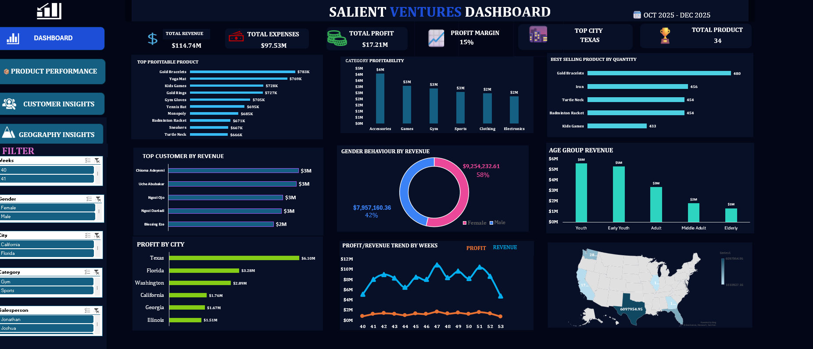

Aderonke Akinlaja
Data Analyst | Power BI Developer | Excel Dashboard Specialist
Transforming business data into meaningful insights through Excel, Power BI, SQL, and interactive dashboards.
Transforming business data into meaningful insights through Excel, Power BI, SQL, and interactive dashboards.
Explore some of my data analytics projects, where I transformed raw data into actionable business insights using Excel, Power BI, SQL, and data visualization techniques.
Projects
Technical Skills
Business Dashboards
Passion for Learning
I'm a passionate Data Analyst with experience in Excel, Power BI, SQL, Power Query, and DAX. I enjoy transforming raw data into interactive dashboards and meaningful insights that support business decision-making.
Before transitioning into data analytics, I built a strong foundation in customer service, hospitality, and administration. Those experiences strengthened my communication, problem-solving, and stakeholder management skills, which I now combine with technical expertise to deliver valuable business insights.
Data Cleaning, Analysis, Dashboards
Reports, DAX, Data Modeling
Queries and Data Extraction
Data Transformation
Measures and Calculations
Data Visualization
Microsoft Excel
Power BI
SQL
Power Query
DAX
Data Modelling
April 2026 - Present
December 2023 - September 2024

Designed an interactive Excel dashboard to evaluate the effectiveness of SALIENT Ventures' Q4 2025 recovery strategy. The dashboard provides insights into revenue, profitability, customer behaviour, product performance, and regional sales trends to support strategic business decisions.
Microsoft Excel • Pivot Tables • Pivot Charts • Dashboard Design • Data Cleaning
Completed Project
Developed an interactive Excel dashboard...
View Case Study →In Progress
Currently developing a Power BI dashboard to analyse customer behaviour and business KPIs.